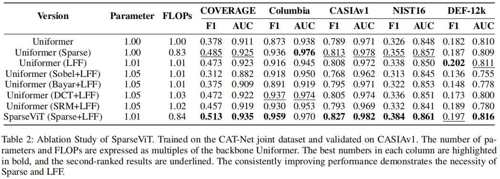

SparseViT:Nonsemantics-Centered, Parameter-Efficient Image Manipulation Localization through Spare-Coding Transformer

Can We Get Rid of Handcrafted Feature Extractors?
SparseViT:
Nonsemantics-Centered, Parameter-Efficient Image Manipulation
Localization through Spare-Coding Transformer
\(\begin{array}{c}<br/>{\mathrm{Lei~Su^{1,2},~Xiaochen~Ma^{3},~Xuekang~Zhu^{1,2},~Chaoqun~Niu^{1,2,4},~Zeyu~Lei^{1,2,*}}}\\<br/>{\mathrm{^1~中国四川大学计算机科学学院}}\\ <br/>{\mathrm{^2~中国教育部机器学习与产业诚信工程研究中心}}\\ <br/>{\mathrm{^3~穆罕默德·本·扎耶德人工智能大学}}\\<br/>{\mathrm{^4~澳门大学计算机与信息科学系}}<br/>\end{array}<br/>\)
摘要
非语义特征或语义不可知特征与图像上下文无关，但对图像篡改敏感，被认为是图像篡改定位（IML）的证据。由于手工标签是不可能的，现有的工作依赖于手工制作的方法来提取非语义特征。手工制作的非语义特征危及了IML模型在看不见或复杂场景中的泛化能力。因此，对于IML，重要的是：如何自适应地提取非语义特征？非语义特征与上下文无关，且对篡改敏感。也就是说，在图像中，除非发生篡改，否则它们在各个补丁之间是一致的。这样，图像块之间的稀疏和离散交互足以提取非语义特征。然而，图像语义在不同块上差异很大，需要图像块之间密集和连续的交互来学习语义表示。因此，在本文中，我们提出了一个稀疏视觉Transformer（SparseViT），它将ViT中的密集、全局的自注意重新定义为稀疏、离散的方式。这种稀疏的自注意打破了图像的语义，迫使稀疏vit自适应地提取图像的非语义特征。此外，与现有的IML模型相比，稀疏自注意机制大大减少了模型的大小（最大值为80%），实现了惊人的参数效率和计算减少。大量的实验表明，在没有任何手工特征提取器的情况下，SparseViT在跨基准数据集的泛化和效率方面都具有优势。
代码-https://github.com/scu-zjz/SparseViT
1引言
随着图像编辑工具和图像生成技术的快速发展，图像处理已经变得非常方便。为了解决这一趋势，研究人员开发了图像篡改定位（IML）技术，以识别图像中特定的篡改区域。由于篡改后不可避免地留在图像上的伪影（篡改痕迹），这些伪影可以分为语义和非语义（语义无关）特征。语义不可知的特征是指突出低级伪影信息的特征，这些信息独立于图像的语义内容。这些特征显示了图像的篡改和未篡改区域之间的分布的显著差异。 (Guillaro et al. 2023)现有的主干网络(Simonyan and Zisserman 2014) (Wang et al. 2020) (Dosovitskiy et al.2020)，主要用于语义相关任务设计，可以有效地提取篡改图像的语义特征。在提取非语义特征方面，大多数现有的方法依赖于手工制作的特征提取器 (Zhou et al. 2018) (Bayar and Stamm 2018) (Cozzolino and Verdoliva 2019)。如表1所示，几乎所有现有的IML模型都遵循了“语义分割骨干网络”和“手工制作的非语义特征提取”的设计。
然而，该方法需要针对不同的非语义特征进行自定义提取策略，但在提取这些特征时缺乏适应性。因此，该方法在提高模型适应未知场景的能力方面受到了限制。与传统的手工提取非语义特征的方法不同，我们提出了一种自适应机制来提取被篡改图像中的非语义特征。我们认识到，图像的语义特征表现出很强的连续性和显著的上下文相关性（Wang
et al.
2018），这意味着局部语义特征在表示图像的全局语义方面往往不足。因此，局部区域之间紧密而连续的交互是构建全局语义特征的必要条件。相比之下，图像的非语义特征，如频率和噪声，对篡改高度敏感，并在图像的不同区域表现出更大的独立性。这一特性允许我们使用稀疏编码来建立非语义特征的全局交互，利用它们的敏感性来检测篡改。
在此基础上，我们介绍了一种新的稀疏视觉变换稀疏视觉Transformer。SparseViT采用稀疏自注意机制，重新设计了ViT中密集的全局自注意，以更好地适应非语义特征的统计特性。通过稀疏处理，自我注意机制选择性地抑制了语义信息的表达，专注于捕捉与图像篡改相关的非语义特征。使用分层策略，SparseViT在不同层次上应用不同程度的稀疏度来精细地提取非语义特征。我们还设计了一个多尺度融合模块（LFF）作为解码器，集成了不同稀疏度层次提取的特征图，丰富了模型对跨多尺度非语义内容的理解，增强了其鲁棒性。这种设计使SparseViT能够专注于学习对篡改敏感的非语义特征，而忽略语义特征，允许从图像中自适应地提取非语义特征。
据我们所知，目前还没有明确设计用于自适应提取非语义特征的模型。SparseViT可以被认为是自适应非语义特征提取的开创性工作。我们所有的实验都是在相同的评价方案下进行的。所有模型都在CAT-Net（Kwon
et al.
2021）数据集上进行训练，并在多个基准数据集上进行测试。我们提出的方法在几个基准数据集上展示了出色的图像处理定位能力，与其他模型相比，我们的模型获得了最好的平均性能。综上所述，我们的贡献如下：
- 我们发现，图像中的语义特征需要连续的局部交互来构造全局语义，而非语义特征由于其局部独立性，可以通过稀疏编码实现全局交互。
- 基于语义特征和非语义特征的不同行为，我们提出了一种使用稀疏自注意机制来自适应地从图像中提取非语义特征。
- 为了解决传统的多尺度融合方法的非可学习性问题，我们引入了一种可学习的多尺度监督机制。
- 我们提出的SparseViT在不依赖特征提取器的情况下保持了参数效率，并在四个公共数据集上实现了最先进的（SoTA）性能和优秀的模型泛化能力。
2相关工作
2.1伪影特征提取
早期的图像篡改定位方法主要依赖于手工制作的卷积内核从图像中提取非语义特征。例如，BayarConv（Bayar和Stamm
2018）设计了一个带有高通滤波器结构的卷积核来捕获图像中的噪声模式。RGB-N（Zhou
et al.
2018）引入了SRM滤波器来捕获噪声分布的差异，从而表示非语义特征。随着深度学习在各种计算机视觉和图像处理任务中的成功，许多最近的技术也采用了深度学习来解决图像处理定位问题（Zhou
et al.
2018）。然而，由于现有的用于语义相关任务的网络在表示非语义特征方面的局限性，目前几乎所有的篡改定位方法都依赖于语义分割骨干网络与手工制作的非语义特征提取相结合。
例如，ManTra-Net
(Wu, AbdAlmageed, and Natarajan 2019)和SPAN (Hu et al.
2020)都将BayarConv和SRM作为其模型的第一层。ObjectFormer (Wang et al.
2022)基于Transformer架构，另外采用手工制作的DCT模块来提取高频特征，从而更好地捕获图像中的非语义特征。TruFor
(Guillaro et al. 2023)使用手工制作的Noiseprint (Cozzolino and Verdoliva
2019)
特征提取器，并通过对比学习，利用这些提取的特征来增强其篡改检测和定位能力。NCL(Zhou
et al.
2023)利用基于sobel的（Dong等人2022a）非语义特征提取器来增强其识别非语义特征的能力。各模型从操纵图像中提取非语义特征的方法如表1所示。例如，ManTra-Net（吴、阿卜杜拉·阿尔马吉德和纳塔拉扬，2019）和SPAN（Hu等人，2020）都将BayarConv和SRM作为其模型的第一层。前者（Wang
et al.
2022）基于变压器架构，另外采用手工制作的DCT模块来提取高频特征，从而更好地捕获图像中的非语义特征。TruFor（Guillaro等人，2023年）使用手工制作的噪声打印（科佐利诺和维多利瓦，2019年）特征提取器，并通过对比学习，利用这些提取的特征来增强其篡改检测和定位能力。NCL（Zhou等人2023）利用基于sobel的（Dong等人2022a）非语义特征提取器来增强其识别非语义特征的能力。各模型从操纵图像中提取非语义特征的方法如表1所示。
2.2视觉Transformer中的稀疏自注意力
该Transformer最初被提出用于处理自然语言处理（NLP）任务，并首次应用于序列数据。本文（Dosovitskiy等人，2020年）介绍了一种新的视觉Transformer（ViT）模型，为将Transformer应用于视觉领域提供了新的见解。
自从Transformer引入视觉领域以来，对稀疏关注的研究从未停止。SwinTransformer（Liu
et al.
2021b）在一个分层结构中使用移动的窗口来聚集注意力。SparseTransformer（Child
et al.
2019）通过限制注意权值中的非零元素的数量来降低计算复杂度。ResMLP（Touvron
et al. 2022）将局部连接纳入注意机制，而（Liu et al.
2021a）则利用MLPs的非线性特性来取代传统的注意计算。ViViT（Arnab等人.
2021）和CSWinTransformer（Dong等人.
2022b）通过分解Transformer内的多头自注意，降低了计算成本，并提高了模型处理长序列的能力。ViViT将注意力分解为时间和空间计算，而CSWinTransformer将多头自注意力分成两个平行组，一个组处理水平条纹，另一个组处理垂直条纹，形成一个十字形窗口。焦点自我注意（Yang
et al.
2021）通过结合细粒度的局部和粗粒度的全局交互，使注意模式稀疏化。在IML领域，目前还没有提出利用稀疏注意自适应地从篡改图像中提取语义不可知信息的方法。我们的工作是在IML领域的开创性工作。
3.方法
当前数据集中的篡改实例通常专注于移动、删除或复制整个对象等篡改。这使得现有的模型（Pun、Yuan和Bi
2015）能够通过仅依赖语义特征来相对较好地识别被操纵的区域。然而，这种对语义特征的过度依赖忽略了非语义特征的重要性，限制了模型在不熟悉或复杂的篡改场景中的泛化能力。我们观察到，图像的语义信息表现出很强的连续性和上下文依赖性（Wang
et al.
2018），这需要全球注意机制来加强局部和全球区域之间的相互作用（Vaswani
2017）。相比之下，非语义信息倾向于在局部特征和全局特征之间保持一致，并在图像的不同区域之间表现出更大的独立性（乌利亚诺夫、维达尔迪和兰皮茨基2018）。通过利用这种区别，我们可以设计一种机制，减少对语义信息的依赖，同时增强对非语义信息的捕获。
为此，我们提出将全局注意机制分解为“稀疏注意”形式。稀疏注意，当表示图像的语义信息时，可以防止模型对其进行过拟合，允许模型更多地关注图像中的非语义信息。如图1所示，我们改进了Uniformer
(Li et al.
2023)中传统的注意计算，用稀疏自注意代替全局自注意，其稀疏性呈指数衰减。
3.1稀疏的自注意力
传统的深度模型侧重于检测语义对象，旨在拟合这些语义对象。因此，传统的自注意采用全局交互模式，即图像中的每个块与所有其块一起参与token-to
token的注意力计算 (Liu et al.2021b) (Yuan et al.
2021)。然而，在图像篡改定位领域，这种全局交互引入了许多不相关的键值对。此外，该模型过分强调语义信息，意味着在全局交互过程中，它考虑了图像中所有斑块的特征，如颜色和形状，从而全面理解图像的整体内容。由于该模型主要关注全局交互过程中图像的整体语义结构，因此往往忽略了篡改后出现的非语义信息的局部不一致性。
为了解决这个问题，我们建议使用稀疏注意力来代替原来的全局注意力。我们引入了一个新的架构超参数，称为“稀疏率”，缩写为“S”。给定一个输入特征图\(X\ \in\ \mathbb{R}^{H\times W\times
C}\)，我们不关注整个\(H\times
W\)特征图，而是将特征划分为形状为（\(S\times
S,\frac{W}{S}\times\frac{W}{S},C\)）的张量块。这意味着该特征映射被分解为大小为\({\frac{H}{S}}\times{\frac{H}{S}}\)的\(S\times
S\)非重叠张量块，并分别在这些张量块内进行自注意力计算。
如图2所示，只有标记有相同颜色的张量块才能执行自注意力计算。该设计抑制了稀疏语义信息在注意块中的表达，使模型专注于提取非语义特征。此外，特征图中张量块的稀疏化消除了在篡改定位中涉及大量无关键值对的注意计算，从而减少了FLOPs。
3.2多尺度特征
在图像篡改定位任务中，引入具有不同稀疏率的多尺度监督是至关重要的。稀疏度较小的特征映射具有丰富的语义信息，有助于模型理解图像的全局上下文和结构。相反，稀疏性较大率的特征图包含更多的非语义信息，有助于模型捕获图像细节和局部特征。多尺度监督的引入允许模型通过不同程度的抑制语义特征来自适应地提取各种非语义特征，从而提高其在不同视觉场景中的泛化能力。
如图1所示，我们在阶段3和阶段4的不同块中引入了不同的稀疏率。3和4阶段各块稀疏率计算方法如下： \[S3_{S}^{b_{i}}=2^{(3-\frac{i}{5})},\quad i=0\dots\cdot19\]
\[S4_{S}^{b_{i}}=2^{(1-\frac{i}{4})},\;\;\;\;i=0\dots6\]
在这里，上标\(b_i\)表示一个阶段内的不同层，其中每一层从0开始编号，下标S表示稀疏性。我们使用阶段3和阶段4中最后一个块在不同稀疏率下的输出作为我们的多尺度特征映射。此外，由于全局关注的稀疏性，我们可以很容易地获得多尺度信息。该方法不仅在不增加计算负担的情况下显著提高了模型的准确性和性能，而且使模型的效率和鲁棒性。
3.3轻质和有效的预测头LFF
Layer scale (Touvron et al.
2021)是Transformers中使用的一种技术，其中多层自注意和前馈网络通常堆叠，每一层引入一个可学习的缩放参数\(\gamma\)。这个缩放参数可以学习不同的值，从而能够在整个网络中更有效地进行信息传输。目前，特征融合方法通常通过加法或连接等简单的操作来实现（Lin
et al.
2017），它只提供固定的特征映射的线性聚合，而不考虑这种组合对特定对象是否最优。对于模型的最终预测，我们的目标是设计一个简单而有效的预测头。受变压器架构中的层尺度机制的启发，我们为每个特征图引入了一个可学习的参数来控制尺度比例，允许更自适应的特征融合。
所提出的LFF（可学习特征融合，Learnable
Feature Fusion）预测头由五个主要部分组成，如图3所示。
首先，使用LFF层将特征映射F1到F4的通道统一到512维。特征图F5和F6被上采样到原始大小的十六分之一。然后，将每个特征映射乘以其相应的\(\gamma\)缩放参数，其初始化为一个较小的类似于1e-6的值。然后，使用另一个LFF层对所有缩放后的特征图进行求和，并将求和结果的信道维数降为1。最后对结果进行上采样，以上采样H×W×1掩模作为最终预测结果。LFF过程可以形式化如下： \[F_{i}=\mathrm{Linear}(C_{i},C)(F_{i}),\quad i=1\dots4\]
\[F_{i}=\mathrm{U\!{p}s a m p l e}\left({\frac{H}{16}}\times{\frac{W}{16}}\right)(F_{i}),\quad i=5,6\]
\[M_{p}=\mathrm{A d d}\left(F_{i}\times\gamma\right),\quad i=1\dots6\]
\[M_{p}=\mathrm{Linear}(C,1)(M_{p})\]
\[M_{p}=\mathrm{Upsample}\left(H\times W\right)\left(M_{p}\right)\]
通过设置特征图的权值参数，该模型可以动态地调整每个特征图对融合结果的贡献，从而提高了特征融合的灵活性。通过这种简单的设计，该模型可以更好地平衡和集成多尺度特征，突出重要的特征，同时抑制不相关或冗余的特征。
4.结果
4.1实验设置
为了确保公平比较与现有的最先进的图像操作定位方法，我们训练模型CAT-Net (Kwon et al.2021)介绍的数据集，然后测试CASIAv1 (Dong, Wang, and Tan 2013), NIST16 (Guan et al. 2019), COVERAGE (Wen et al. 2016), Columbia (Hsu and Chang 2006), 和DEF-12k (Mahfoudi et al. 2019)数据集。与之前的大多数工作类似，我们使用像素级F1分数和AUC（曲线下面积）来衡量模型的性能。除非另有说明，我们使用默认阈值0.5报告结果。有关实验设置和DEF-12k数据集的详细信息，请参见附录A。
4.2消融研究
为了更好地评估每个组件的性能影响，我们采用了一种增量的方法，逐步添加组件，并将它们与包含所有组件的完整模型进行比较。这种方法允许我们彻底地测量和优化我们所提出的模型的架构。我们研究了使用稀疏注意和全局注意对模型参数和浮点运算（FLOPs，floating-point operations）的影响。此外，我们还比较了手工设计的特征提取器和稀疏注意机制在提取非语义特征方面的能力。为了探究LFF预测头的影响，我们将其性能与LFF（Xieetal.2021）在稀疏注意引入下的MLP预测头进行了比较。这种比较不仅帮助我们评估了预测头部设计的有效性，而且还揭示了不同头部对整体模型性能的具体影响。此外，我们还比较了传统的单尺度监督与我们提出的多尺度监督方法，以研究多尺度监督的优势及其对模型性能的贡献。所有这些评估的结果都是基于对CAT-Net提出的数据集进行的训练，并在CASIAv1, NIST16, COVERAGE, Columbia和DEF-12k上进行了测试。实验结果见表2和表3。
4.3稀疏注意可以有效地捕获非语义信息。

在表2中，我们比较了5个数据集的稀疏注意和全局注意的性能。此外，我们还报告了人工提取的非语义特征和稀疏注意在这5个数据集上的性能。结果一致证实了稀疏注意机制在从操纵图像中提取非语义特征方面的显著优势。我们观察到，某些手工制作的特征提取方法并没有显著提高数据集上的模型性能，在某些情况下，甚至还导致了性能下降。这提出了人工非语义特征提取有效性的问题，值得进一步研究。然而，很明显，稀疏注意机制显著提高了所有数据集的模型性能，在5个不同的数据集上实现了全面的增强。
此外，稀疏注意的设计也显示了其在减少计算负担方面的优势。与全局注意相比，稀疏注意使模型的浮点操作减少了约15%，这在大规模图像处理任务中尤其有价值。综上所述，稀疏注意通过精确提取被操纵图像中的非语义信息，提高了模型对细微伪影的敏感性，从而显著提高了模型的泛化能力。
如图4所示，我们定性地证明了在稀疏化之后，该模型成功地抑制了需要密集编码和长期上下文依赖的语义特征，同时能够提取不需要密集编码的非语义特征。在附录C中，我们对稀疏注意力和手工制作的特征提取器进行了定性分析。
4.4LFF的影响
在表3中，我们报告了单尺度特征、LFF和MLP（Xie et al. 2021）预测头在数据集上的性能。
实验结果表明，无论是使用单尺度或多尺度特征，还是采用不同的特征融合策略，CASIAv1数据集上的F1得分均具有较高的一致性。我们将这种现象归因于CASIAv1和CASIAv2来自同一个数据集，因此在CASIAv1数据集上的性能不足以反映模型的泛化能力（Ma
et al.
2023）。进一步的分析显示，与仅使用单尺度特征相比，LFF预测头和MLP预测头在5个数据集上的平均F1得分上均有显著改善。这表明，有效的特征融合策略可以显著提高模型的图像操作检测性能。具体来说，与MLP预测头相比，LFF在平均F1方面也取得了改进，验证了可学习的特征融合在性能方面优于简单的特征添加。
LFF的优点在于它能够自适应地学习不同特征映射之间的最优融合权值，而不仅仅是添加它们。这种学习机制允许LFF更精确地处理多尺度特征，从而更好地捕获图像中的操作痕迹。此外，多尺度特征的使用已被证明是有益的，因为它提供了不同级别的语义和非语义信息，帮助模型在各种操作条件下做出更准确的预测。
4.5最先进的比较
为了确保评估的公平性，我们只考虑了代码在网上公开的模型。我们遵循与CAT-Net相同的协议，重新训练这些模型，并在公共数据集上测试它们。在本研究中，我们考虑了多种方法，并最终包括四种依赖于手工提取操纵图像的非语义特征的方法： ManTraNet、MVSS、CATNet v2和TruFor。此外，我们还包括了一种不使用手工特征提取的方法： PSCC-Net（Liu et al. 2022）。表1对这些方法进行了简要的总结，以供参考。我们的目标是提供一个全面和公平的比较，以获得更深入的了解在图像操作定位的不同方法的性能和潜力。
4.5.1 定位结果
在表4中，我们展示了各种方法在像素级定位中的性能。
我们的方法以其优越的平均f1分数而突出，在所有数据集上排名最好。对这些结果的详细分析表明，我们的模型优于基于手工非语义特征提取的传统方法和不依赖于手工特征的模型。我们的模型之所以在于它在特征学习和表现方面的创新。通过深入探索操纵图像的内在结构，我们的模型可以准确地捕捉到操作留下的细微痕迹。即使面对复杂多样的操作技术，它也能保持较高的检测精度。
4.5.2 检测结果
我们选择了在Pixel-F1指标方面表现最好的权重参数来评估模型的AUC性能。通过分析表4中的数据，我们观察到我们的SparseViT模型在几乎所有测试数据集上都获得了最好的性能，并显示出最高的平均AUC值。这一结果表明，SparseViT模型在广泛的性能评估点上都优于现有的基线。
4.5.3 模型大小比较
与目前最好的Trufor相比，SparseViT不仅在相同的训练数据大小（512×512像素）下获得了更好的F1和AUC性能，而且将模型大小减少了80%以上。此外，即使与使用更小的训练数据（256×256像素）的ManTraNet相比，SparseViT在减少计算负荷方面显示出显著的优势。具体数据见表5。
4.5.4 鲁棒性分析
根据参考文献（Wu，AbdAlmageed和Natarajan，2019）和（Hu等人，2020），我们评估了模型对CASIAv1数据集上图像操作定位的三种常见攻击方法的鲁棒性，即JPEG压缩、高斯模糊和高斯噪声。结果如图6所示。
观察表明，SparseViT在抵抗这些干扰方面优于现有的最先进的模型，显示出优越的鲁棒性。
总的来说，与在一个公平的跨数据集评估协议下测试的现有模型相比，我们的模型达到了最先进的性能。图5定性地说明了我们的模型的一个关键优势：无论是否涉及对象级操作，我们的模型有效地利用了独立于图像语义内容的非语义特征来准确识别被操纵的区域，从而避免了与语义相关的误报。
5.结论
依靠手工制作的方法来增强模型提取非语义特征的能力，往往会限制其在不熟悉的场景中的泛化潜力。为了超越手工方法，我们建议使用一种稀疏的自注意机制来学习非语义特征。稀疏自注意引导模型更多地关注操作敏感的非语义特征，同时抑制语义信息的表达。我们的自适应方法不仅参数高效，而且比以前的手工方法更有效，大量的实验表明SparseViT实现了SoTA性能和泛化能力。